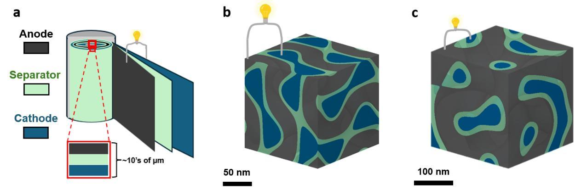
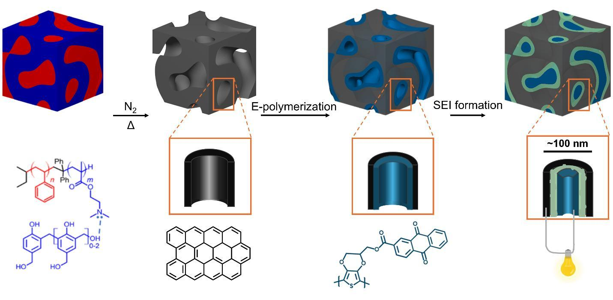

PAPER COMPANION · ENERGY STORAGE
An interwoven battery
Explore how connected electrodes form a self-separating 3D battery.
START WITH FIGURE 1

Tait et al. · 2026 Architecture comparison · original Figure 1

The interactive renderer is unavailable. The paper figures and all explanations remain available.
FROM THE PAPER
A different way
to arrange a battery
Figure 1 compares stacked sheets with connected three-dimensional networks. The right-hand structure is the subject of this paper.
Inspect the process
Compare the measurements
Compare the arrangement
Inspect any stage
Isolate a material
Li⁺ crosses the interphase
e⁻ stays in its electrode network
Panel labels and scale bars preserved.
Tait et al. · arXiv:2604.26222v1 ↗
BUILD THE EXPLANATION
WHAT THE PAPER ADDS
Build together.
Then separate.
The unusual step is the order: the researchers deposit the cathode directly onto the carbon, then use electrochemical processing to form the separating interphase between them.
This is a proof of principle. The reported devices show rapid capacity fading and limited cyclability; a shorter geometric path alone does not establish better battery performance.
Source, interpretation & model
The source
William R. T. Tait et al., All-organic self-separating three-dimensionally nanoarchitected electrochemical energy storage devices, arXiv:2604.26222v1, 29 April 2026.
Figure 1 compares a conventional layered cell, an earlier ordered double-gyroid Li–S cell and the nonperiodic architecture studied here. Our 3D explorer focuses on the last of these. Figure 2 sets out the fabrication concept.
What “all-organic” means
The electrodes and framework are organic-derived. The SEI can contain organic and inorganic compounds; lithium salts and external metal contacts are also involved. The phrase does not mean that every ingredient is organic.
What is represented
A deterministic, nonperiodic geometry illustrates connected carbon, polymer and interphase domains. It is not reconstructed from the paper’s microscopy. Domain thickness, porosity and surface shape are illustrative; the real coating is heterogeneous. Connectivity is checked on the generating grid.
The local interface view enlarges the separation to explain function. Moving markers indicate transport roles, not individual molecular paths, calculated flux or physical time. The highlighted network route proves a connection in this geometry, not a rate of electronic conduction.
The electrochemical step
The paper processes the coated scaffold against external lithium in liquid electrolyte. Low potential de-dopes the conducting polymer; electrolyte decomposition produces the SEI. Further lithiation and charging steps prepare the full cell. This is the authors’ proposed interpretation of the process, rather than a directly imaged sequence of interphase growth. A separate outer PEDOT contact layer is omitted from this interior visualization.